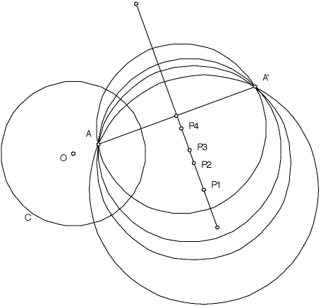

Poles and Polars
| Because a geodesic must lie on a circle orthogonal to the boundary of the Poincare disc, the center of this circle must lie outside the Poincare disc. |
| The center of this circle is called the pole of the geodesic. |
| If the geodesic is a diameter of the Poincare disc, its pole is the point at infinity. |
| For any point A in the Poincare disc, how many geodesics pass through A and what is the locus of the poles of these geodesics? |
| Call C the circle that bounds the Poincare disc. |
| Take A a point in the Poincare disc and A' the inverse of A with respect to C. |
| We have seen that if both A and A' lie on a circle, that circle is orthogonal to C, hence determines a geodesic through A. |
| So the set of poles of all geodesics through A is identical to the set of centers of all circles that contain both A and A'. |
|  |
| Several circles determining geodesics through A, together with their poles P1, P2, P3, and P4. |
| Infinitely many circles pass through A and A', and the locus of their centers is the perpendicular bisector of the segment AA'. |
| This locus of centers is called the polar of the point A. |
Return to hyperbolic geometry.